1.1 Modelos de arquitectura de cómputo
Es el diseño y organización de un sistema para computadoras.
Es una muestra y descripción de cada función, así como los requisitos para el diseño e implementación de varias partes del equipo de TI.
Nos centramos principalmente en las denominadas CPU que se ejecutan en el interior y acceden a direcciones de memoria, sistemas de E/S y periféricos.
También se define ampliamente como la selección e interconexión de componentes de hardware para crear una computadora en función de los requisitos funcionales, el rendimiento y el costo.
Los equipos de TI reciben y transmiten información a través de dispositivos periféricos a través de canales de distribución o buses (cables que están conectados físicamente). La unidad central de procesamiento es responsable de procesar la información para una computadora.
La información debe intercambiarse con los dispositivos periféricos y la CPU.
Todas estas unidades del sistema, excepto la CPU, se denominan dispositivos periféricos, por lo que una computadora consta de dos partes claramente diferenciadas: la unidad central de procesamiento (que es responsable de ejecutar programas). Consta de memoria principal y lógica aritmética (ALU). ), unidad de control (UC) y dispositivos periféricos (que pueden ser de entrada, salida, entrada, salida e interconexión).
1.1.1 Clásicas
En su mayoría en la arquitectura de la computadora, se centra en la unidad de tratamiento central, también conocida como memoria interna y acceso, salida, dispositivo y otros tipos.
También se define generalmente como seleccionar y conectar componentes de hardware para crear computadoras según las características, el rendimiento y los requisitos de costo.
"La CPU es responsable de manejar la información al grupo de cálculo, el intercambio de información se realiza con dispositivos y CPU".
Todas las unidades de un sistema de CPU exoneratorio se denominan periféricos, de modo que el dispositivo informático tiene dos diferencias:
CPU (responsable de los programas ejecutables, incluida la memoria clave), de Aritmetics Logica (ALU) y el controlador (UC) y el periférico (entrada, salida, salida y conexión).
Modelo arquitectónico clásico:
Estas arquitecturas se desarrollan en las primeras computadoras mecánicas y vacium.
Hay 2 arquitecturas diferentes relacionadas con el uso y la distribución de la memoria:
Arquitectura de John Vonn Neumann: Sistemas con este procesador arquitectónico.
La CPU está conectada a la memoria principal (casi siempre RAM) en la que se guardan los programas y los datos.
Para la memoria accesible a través de un solo sistema de conexión de bus (control, dirección y datos).
En esta arquitectura, el tamaño de la unidad de datos está fijada por el ancho del bus de comunicación de memoria con la CPU. Hay un solo autobús que hace que el procesador sea más lento en su respuesta porque no puede buscar un nuevo comando en la memoria, mientras que las otras instrucciones no terminan.
Las computadoras digitales tienen la aparición de Vonn Neumann, incluidos cinco componentes principales:
- Memoria de la memoria.
-La entrada / salida.
- Control de control.
-Unidad Aritmetics Logica.
- PROGRAMAS DE ALESTONES.
Arquitectura de Harvard: esta arquitectura utiliza el micro procesador, la CPU está conectada a dos memorias (una con las instrucciones y la otra con datos) con dos autobuses diferentes.
Dos autobuses son completamente independientes, lo que permite el acceso de CPU a la memoria y las instrucciones de datos de forma automática y simultánea.
Debido a que los autobuses son independientes pueden tener contenido diferente en la misma dirección y una longitud diferente.
La longitud de los datos y las instrucciones puede variar permitiendo el uso de la optimización de la memoria.
"Gracias a los autobuses independientes, la CPU puede acceder a los datos para completar la ejecución del comando mientras lee las siguientes instrucciones para ejecutar.
El tamaño de las instrucciones no está relacionado con los datos y, por lo tanto, posibles optimizados para cualquier comando para ocupar un solo programa.
Ubicación de la memoria, obtener mayor velocidad y menor longitud del programa.
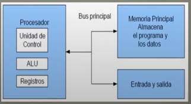
Arquitectura de Harvard:
Esta arquitectura utiliza un microprocesador y la CPU está conectada a dos memorias (una con instrucciones y otra con datos) a través de dos buses diferentes.
Los dos buses son completamente independientes, lo que permite que la CPU acceda a los datos de la memoria y a las instrucciones de forma simultánea e independiente.
La longitud de los datos y las instrucciones pueden variar, lo que permite un uso óptimo de la memoria.
Gracias a los buses independientes, la CPU puede acceder a los datos para completar la ejecución de las instrucciones, al mismo tiempo que lee las siguientes instrucciones a ejecutar.
El tamaño de las instrucciones no está relacionado con el tamaño de los datos y, por lo tanto, se puede optimizar para que cualquier instrucción ocupe una única ubicación de memoria del programa, lo que da como resultado una mayor velocidad y una menor duración del programa.

1.1.2 Segmentadas
La arquitectura de segmentación es una técnica que se utiliza para implementar la segmentación o el paralelismo. Divida el asistente en pasos, procese diferentes instrucciones en cada paso y trabaje con varios pasos al mismo tiempo. Puede ejecutar diferentes instrucciones en paralelo utilizando una cola de comandos para comunicarse, llamada canalización.
Una canalización es una forma eficiente de organizar el hardware de la CPU para realizar múltiples operaciones al mismo tiempo.
Implica dividir la ejecución de instrucciones en pasos que permitan la ejecución simultánea.
Las etapas de segmentación están vinculadas entre sí para formar una especie de canal, donde los pedidos ingresan por un extremo, se procesan por etapas y salen por el otro extremo.
Dado que todos los pasos están interconectados, estará listo para funcionar al mismo tiempo.
El rendimiento del clip está determinado por el número de veces que el comando abandona el canal. El tiempo necesario para mover las instrucciones a lo largo del canal es un ciclo de máquina. La duración del ciclo de una máquina está determinada por el tiempo requerido para el paso más lento, y los ciclos de la máquina son similares a uno (a veces dos o más) ciclos de reloj, aunque un reloj puede tener múltiples fases. La fragmentación es una técnica de implementación que permite al programador explotar la similitud de las instrucciones de flujo secuencial, con una ventaja significativa que los programadores no pueden ver sobre otras técnicas de velocidad.
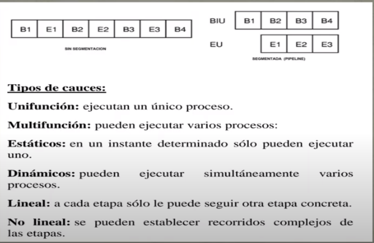
Explota el paralelismo entre instrucciones de flujo secuenciales.
La fragmentación es una técnica de ejecución en la que se superpone la ejecución de muchas declaraciones.
Se utilizan técnicas de ejecución importantes para acelerar el procesador.
La segmentación es como una línea de montaje: cada paso de segmentación completa una instrucción.
Al igual que una línea de montaje, la acción a realizar en las instrucciones se divide en partes más pequeñas, cada una de las cuales toma una pequeña porción de tiempo para completar la instrucción completa. Cada uno de estos pasos se define como los pasos de la sección OR.
Las fases están vinculadas entre sí para formar una especie de canal en el que las instrucciones entran por un extremo, se procesan a través de fases y salen por el otro extremo.
El rendimiento del segmento está determinado por el número de veces que la instrucción sale de la canalización.
Dado que las fases están interconectadas como todas las fases, deben estar listas para hablar al mismo tiempo. El tiempo necesario para mover las instrucciones, un paso, a lo largo del canal es un ciclo de máquina.
El tiempo de ciclo de la máquina está determinado por el tiempo requerido para el paso más lento (ya que todos los pasos progresan al mismo tiempo).
Por lo tanto, el ciclo de una máquina es un ciclo de reloj (a veces dos o más raramente), aunque un reloj puede tener más de una fase. La mejora en la velocidad se debe a la parte de transmisión manual.
La segmentación reduce el tiempo medio de ejecución por instrucción.
Esta reducción se puede lograr reduciendo el tiempo de ciclo de reloj de la máquina segmentada, reduciendo el número de ciclos de reloj por instrucción o haciendo ambas cosas. El mayor efecto es el número de ciclos de reloj por comando, aunque los ciclos de reloj suelen ser más cortos en las máquinas hash (especialmente en las supercomputadoras parciales).
La fragmentación es una técnica de implementación que aprovecha el paralelismo de instrucciones en una secuencia secuencial. Tiene la gran ventaja de que, a diferencia de algunas técnicas de aceleración, el programador no puede verlo.
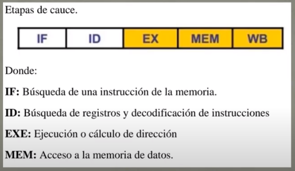
1.1.3 De Multiprocesamiento
Se denomina multiprocesador a un computador que cuenta con dos o mas microprocesadores (CPUs). El multiprocesador permite ejecutar simultaneamente varios hilos pertenecientes a un mismo proceso o bien a procesos distintos.
Para que un microprocesador opere correctamente necesita un sistema operativo especialmente diseñado para ello. La mayoria de los sistemas operativos actuales poseen estas capacidades.
"La arquitectura NUMA, donde cada procesador tiene acceso y control exclusivo a una parte de la memoria."
"La arquitectura SMP, donde todos los procesadores comparten toda la memoria."
"Cuando se desea incrementar el desempeño mas de lo que permite la segmentacion, se requiere utilizar mas de un procesador para la ejecucion del programa de aplicacion."
Los CPU de multiprocesamiento se clasifican segun Flynn en:
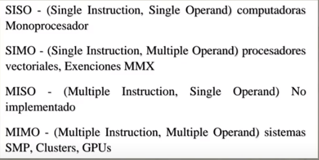
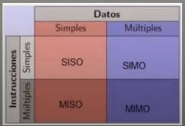
Los procesadores vectoriales, son computadoras pensadas para aplicar un mismo algoritmo numérico a una serie de datos matriciales, en especial en la simulación de sistemas físicos complejos como tales como simuladores de clima, explosiones atómicos, reacciones químicas, etc.
La mayoría de los procesadores modernos incluyen algunas instrucciones del tipo vectorial, tales como las extensiones Al conjunto de instrucciones tales como MMX y SSE. Estás instrucciones les permiten procesar flujos multimedia más eficientemente.
"Los procesadores digitales de señales (DSP), son procesadores especializados en el procesamiento de Señales tales como audio como video, radar, sonar, radio, etc."
"Cuentan con instrucciones tipo vectorial que los hace muy aptos para dicha aplicación. Suelen utilizarse en conjunto con un microcontrolador en dispositivos como reproductores de audio como reproductores de DVD y BlueRay, teléfonos celulares, sistemas de entretenimiento como sistemas de adquisición de datos como instrumentos médicos como controles industriales, etc."
"Suelen utilizarse como un micro controlador en dispositivos como reproductores de audio, reproductores DVD y blueray, telefonos celulares, instrumentos medicos, controles industriales, etc."
En los sistemas SMP, varios procesadores comparten la misma memoria principal y perifericos de E/S, normalmente conectados por uno en comun. Se conocen como simetricos, ya que ningun procesador toma el papel de maestro y los demas de esclavos, sino que todos tienen el mismo acceso a la memoria y perifericos y ambos son administrados por el sistema operativo.
"Pueden formarse con varios núcleos en un solo circuito integrado o con varios circuitos integrados en una misma tarjeta madre. La primera opción ha sido popularizada al hacerse más económicos los procesadores multinúcleo de los principales fabricantes y con su uso en sistemas de gama media y baja, e inclusive en teléfonos celulares y tabletas."
"La segunda opción fue la que usó en un principio y sigue siendo usada en estaciones de trabajo y en servidores de alto rendimiento debido a que incrementa El poder computacional del sistema, pero también incrementa considerablemente el costo del sistema."
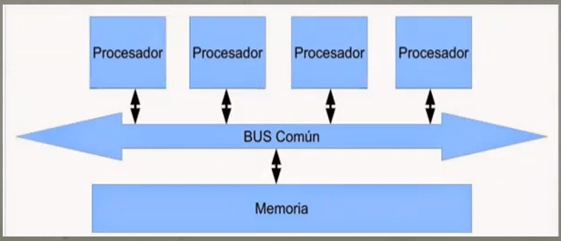
Clusters:
Conjuntos de computadoras independientes conectadas en una red de área local o por un bus de interconexión y que trabajan corporativamente. Con un sistema de procesamiento paralelo o distribuido. Consta de un conjunto de computadoras independientes, interconectadas entre Sí, de tal manera que funcionan como un solo recurso computacional.
Es clave en su funcionamiento contar con un sistema operativo y programa de aplicación capaz de distribuir el trabajo entre las computadoras de la red.
Este tipo de computadora paralelas se ha vuelto muy popular porque permite usar los avances en los procesadores comerciales que tienen una muy buena relación costo rendimiento y se pueden incorporar rápidamente los avances que proporcionan las nuevas tecnologías en cuanto es económicamente viable.
Sin embargo, se debe tener cuidado al implementar la aplicación, Ya que si los datos que hay que pasar de un procesador a otro son demasiados, el tiempo empleado en pasar información de un nodo a otro puede sobrepasar a la ganancia que se obtiene al dividir el trabajo entre varios procesadores.
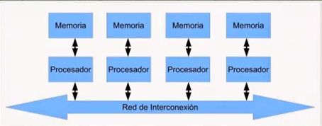
Procesadores gráficos:
Sistemas diseñados originalmente para el procesamiento de gráficos, con múltiples procesadores vectoriales sencillos compartiendo la misma memoria.
La cual también puede ser accedida por el CPU, por la gran cantidad de núcleos con los que cuenta cómo lograr un excelente desempeño al ejecutar algoritmos que se adaptan a ser paralelizados, a tal grado que muchos de los súper computadoras más rápidas de la actualidad utilizan estos procesadores, y los fabricantes de tarjetas gráficas producen versiones de sus productos especializados en acelerar los cálculos de propósito general.
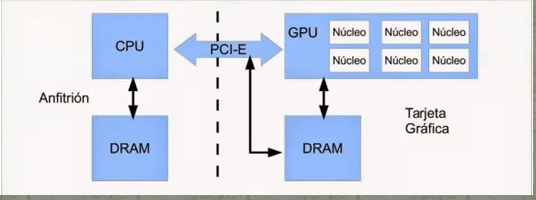
1.2.1 Arquitecturas CISC.
CISC es un modelo de arquitectura en donde los microprocesadores tienen un conjunto de instrucciones que caracterizan por ser muy amplio y permitir operaciones complejas entre operandos, situadas en la memoria o en los registros internos.
Este tipo de arquitectura dificulta el paralelismo entre instrucciones, por lo que en la actualidad, la mayoria de los sistemas CISC de alto rendimiento implementan un sistema que convierte dischas instruccion complejas en varias instruccciones simples del tipo RISC, llamadas microinstrucciones.
"Los CISC pertenecen a la primera corriente de construccion de procesadores, para realizar una sola instruccion un chip CISC requiere de cuatro a diez ciclos de reloj."
Ventajas de CISC:
- Reduce la dificultad de crear compiladores
- Permite reducir el costo total del sistema
- Reduce Los costos de creación de software
- Mejorana la compactación de código
- Facilita la depuración de errores
Ejemplos de microprocesadores basados en la tecnología CISC:
- Intel 8086, 8088, 80286, 80386, 80486.
- Motorola 68000, 68010, 68020, 68030, 6840
Arquitectura RISC:
Es un tipo de un microprocesador que permite instrucciones de tamaño fijo y presentado en un reducido número de formatos, permitiendo a las instrucciones de carga y almacenamiento acceder a la memoria de datos.
El objetivo de diseñar máquinas con esta arquitectura es posibilitar la segmentación y el paralelismo en la ejecución de instrucciones y reducir los accesos a memoria.
"RISC es una filosofía de diseño de CPU para computadora que está a favor de conjuntos de instrucciones pequeñas y simples que toman menor tiempo para ejecutarse."
"El tipo de procesador más comúnmente utilizado en equipo de escritorio, el x86, está basado en CISC, aunque las versiones más nuevas traducen instrucciones basadas en CISC x86 instrucciones más simples basadas en RISC para uso interno antes de su ejecución."
"Los procesadores con tecnología RISC trabajan más rápido al utilizar menos ciclos de reloj para la ejecución de las instrucciones."
Ejemplo de microprocesadores basados en la tecnología RISC:
-MIPS, Million Instruction Per Second
-PA RISC, Hewlett Packard
-SPARC, Scalable Processor Architecture, Sun Microsystem
-POWER PC, Apple, Motorola e IBM
1.2.1.1 Unidad Central de Procesamiento
Los CPUs modernos pueden clasificarse de acuerdo a varias características:
- Tamaño de la Unidad Aritmética Lógica (ALU)
- Bus de conexión al exterior (8, 16, 32 y 64 bits)
- Si su arquitectura cauce (pipeline)
- Si son de arquitectura CISC o RISC
- Si son Von Newmann o Harvard
- Si manejan instrucciones enteras o implementan también instrucciones de punto flotante
Las características más importantes a considerar al escoger un CPU en una aplicación como son.
- Conjunto de registros que el programador puede utilizar.
- Conjunto de instrucciones que pueden ejecutar el CPU.
- Los modos de direccionamiento que pueden usarse para obtener los operandos de las instrucciones.
- Conjunto de pasos que realiza el CPU para procesar cada instruccion.
- Buses de interconexión, usados para que el CPU lea y escriba a la memoria
- Dispositivos de E/S
El procesador era algo totalmente desconocido por los usuarios de PCs. Pero esto fue cambiando con el tiempo y en la actualidad cualquier persona al comprar un equipo se pregunta acerca de los atributos elementales del dispositivo.
El procesador una parte esencial de la computadora, se le conoce como su "Cerebro".
para la selección de los procesadores a utilizar en los equipos necesitamos ver las acciones como:
Acciones directas:
- Integrar un nuevo sistema de cómputo.
- Reemplazar un CPU dañado.
- Actualizar un sistema de cómputo.
Acciones indirectas:
- Comprar un equipo de cómputo nuevo.
- Construir un equipo de control-microcontrolador.
Unidad De Control.
Es la parte inteligente del sistema microprocesador, de los CPUs.
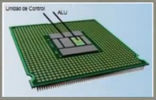
Debido a que el procesador desarrolla sus tareas en funcion de las instrucciones secuenciadas que se ha organizado e implementado el programador, es necesario que el sistema interprete cada instruccion para actuar en consecuencia, tambien conocido como decodificacion de la instruccion.
Es el centro logico de la computadora ya que los recursos de una computadora son administrados en la unidad de control, es esta unidad la que se encarga de dirigir el flujo de datos.
1.2.1.2 Unidad Aritmética Lógica (ALU)
Es un circuito digital que realiza como su nombre lo indica las operaciones aritméticas y lógicas entre los datos de un circuito; suma, resta, divide y multiplica, así como establece comparaciones lógicas a través de las condicionales lógicas " si ", " no ", " o ".
Ademas de los operadores logicos y aritmeticos, la ALU cuenta con una serie de registros para almacenar los datos, y bits de informacion sobre los resultados.
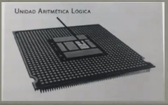
Operaciones de la ALU:
Las instrucciones involucran operaciones sobre un operando, o entre dos de ellos, estando uno de los mismos almacenado en el registro acumulador qué es el registro de trabajo de cualquier ALU. El tipo de operaciones que pueden realizar son:
-Suma aritmética.
-Restaurante métrica (complemento a 2).
-Operaciones lógicas (producto y suma lógica, comparación, complementación, enmascaramiento).
-Desplazamiento o rotación.
-Transferencia.
El circuito ALU es simplemente un operador, es decir, solo realiza operaciones. La ALU no toma decisiones.
Las entradas deben contener tanto la magnitud como el signo que corresponda a la operación.
La ALU requiere de un mecanismo de control que le permita saber el tipo de operación a realizar.
Partes de la ALU:
-Sumador/restador.
-Operadores lógicos (and, or, xor, not).
-Un acumulador y un registro auxiliar.
-Un registro de salida.
-Señales de control.
Un circuito de control que permita:
- Identificar la operación a realizar.
- Administrar los recursos internos.
- Generar las banderas.
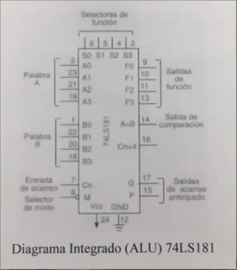
1.2.1.3 Registros
Los registros que encuentran dentro de cada procesador su función principal es almacenar los valores de cada uno de los datos, comandos, instrucciones o estados binarios que son de los que ordenan qué datos deben procesarse, así como la forma en la que se debe procesar o realizar.
Un registro no dejó de hacer una memoria de velocidad alta y con poca capacidad.
Cada registro puede contener una instrucción como una dirección de almacenamiento o cualquier tipo de dato.
"Cada procesador tiene varias asignaciones o tareas que debe realizar para el manejo de la información."
"La información es recibida generalmente en código binario, procedente de las aplicaciones para, después, procesarlos de una forma determinada."
Tipos de registros:
Los registros del procesador se dividen o clasifican atendiendo al propósito que sirven o a las instrucciones que les ordenen.
Registros de datos: guardan valores de datos numéricos, Cómo son los caracteres o pequeñas órdenes. Los procesadores antiguos Tenían un registro especial de dados: el acumulador, el cual era usado para operaciones determinadas.
Registro de datos de memoria (MDR): es un registro que se encuentra en el procesador y que está conectado al bus de datos. Tienen poca capacidad y una velocidad alta por la que escribe o lee los datos del bus que van dirigidos a la memoria o al puerto E/S, es decir, un periférico.
Registros de direcciones: guardan direcciones que son usadas para acceder a la memoria principal o primaria, que solemos conocer como ROM o RAM. En este sentido Cómo podemos ver procesadores con registros que se usan sólo para guardar direcciones O valores numéricos.
Registro de propósito general (GPRs): son registros que sirven para almacenar direcciones o datos generales. Se trata de una especie de registros mixtos que, como su propio nombre indica, no tienen una función específica.
Registro del propósito específico (SPRs): en esta ocasión, estamos entre registros que guardan datos del Estado del sistema, cómo puede ser el registro de estado o el Instruction Pointer.
Registro de estado: sirven para guardar valores reales cuya función es determinar cuándo una instrucción debe ejecutarse o no.
Registros de bandera o "FLAGS": lo encontramos en los procesadores Intel con arquitectura x86 estamos ante un registro con 16 bits. Pero, tiene dos Sucesores EFLAGS, con 32 bits de ancho y RFLAGS, con 64 bits de ancho.
1.2.2.3 Memoria caché
Es la memoria de acceso rápido de una computadora, que Guarda temporalmente las últimas informaciones procesadas.
La memoria caché es un buffer especial de memoria que poseen las computadoras, que funciona de manera similar a la memoria principal, pero es de menor tamaño y de acceso más rápido. Es usada por el procesador para reducir el tiempo de acceso a datos ubicados en la memoria principal que se utilizan con más frecuencia.
La caché es una memoria que se sitúa entre la unidad central de procesamiento (CPU) y la memoria de acceso aleatorio (RAM) para acelerar el intercambio de datos.
Cuando el procesador necesita leer o escribir en una ubicación en memoria principal, primero verifica si una copia de los datos está en la memoria caché; si es así, el procesador de inmediato lee o escribe en la memoria caché, que es mucho más rápido que de la lectura o la escritura a la memoria principal.
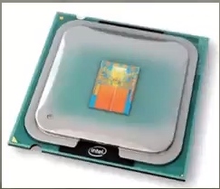
Memoria caché nivel 1 (L1):
Se encuentra en el núcleo del procesador. Es utilizada para almacenar y acceder a datos e instrucciones importantes y de uso frecuente.
Memoria caché nivel 2 (L2):
Se encarga de almacenar datos de uso frecuente, es mayor que la caché L1, pero a costa de ser más lenta, aún así es más rápida que la memoria principal (RAM).
Memoria caché nivel 3 (L3):
Es más rápida que la memoria principal (RAM), pero más lenta que L2, ayuda a que el sistema guarde gran cantidad de información agilizando las tareas del procesador.
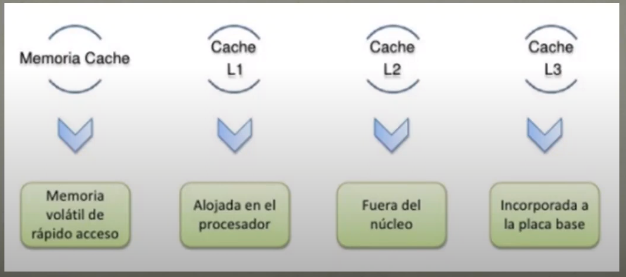
1.2.3.2 E/S programada
Para hacer la operación de E/S entre el procesador y el módulo como el procesador ejecuta un programa que controla toda la operación de E/S (programación, transferencia de datos Y finalización).
Transferencia de un dato:
Sincronización:
Durante la sincronización como el procesador, Como responsable de la transferencia, ejecuta un programa que mira constantemente el estado del periférico consultando al registro de estado del módulo de E/S.
Este programa tiene un bucle que se ejecuta continuamente hasta que detecta el cambio de estado e indica que el periférico está preparado. Este método de sincronización se denomina sincronización por encuesta o esperarte iba.
Mientras se lleva a cabo la sincronización, el procesador está dedicado al cien por cien a esta tarea y, por lo tanto, no puede atender a otros procesos o aplicaciones. Si esta espera es muy larga, puede degradar el nivel de prestaciones de todo el sistema. Por lo tanto, es recomendable que las transferencias hechas utilizando Esta técnica sean cortas y rápidas.
Intercambio de datos:
Durante el intercambio de dato, si es una operación de lectura (entrada), el procesador lee el registro de datos del módulo de E/S para recoger el dato enviado por el periférico, y lo guarda en memoria; si es una operación de escritura (salida), el procesador toma de la memoria el dato que queremos enviar al periférico y lo escribe en el registro de datos en del módulo de E/S.
El procesador es responsable de extraer los datos de la memoria en una salida, y almacenar los datos en la memoria principal. El procesador tiene que esperar un tiempo considerable Hasta que el módulo en cuestión esté preparado para recibir o transmitir datos.
1.2.3.4 Acceso directo a memoria (DMA).
El módulo DMA (Acceso Directo a Memoria) es capaz de imitar al procesador y, capaz de transferir datos desde memoria a través del bus del sistema.
El módulo DMA debe utilizar el bus sólo cuando el procesador no lo necesita cómo puede forzar al procesador a que suspenda temporalmente su funcionamiento.
Un módulo de E/S no es únicamente un conector mecánico que permite conectar el dispositivo al bus del sistema, contienen la lógica necesaria para permitir la comunicación entre los periféricos y el bus.
"Esta técnica más eficiente para transferir bloques de datos, el DMA."
El procesador programa la transferencia de un bloque de datos entre el periférico y la memoria encargada a un nuevo elemento conectado al bus del sistema para hacer toda la transferencia.
Una vez acabada, este nuevo elemento avisa al procesador, de esta manera, el procesador puede dedicar todo el tiempo que dura la transferencia del bloque a otras tareas.
Utilizando la técnica de E/S por DMA se descarga al procesador de la responsabilidad de llevar a cabo la sincronización y el intercambio de datos entre el periférico y la memoria.
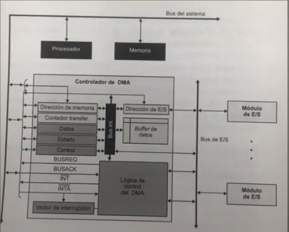
1.2.3.5 Canales y procesadores de E/S
Un canal de entrada y salida representa una ampliación del concepto de DMA. Un canal de entrada y salida puede ejecutar instrucciones de entrada y salida como lo que le confiere un control completo sobre las operaciones de entrada y salida.
Un canal selector controlar varios dispositivos de velocidad elevada y en uno instante dado, se dedica a transferir datos a uno de esos dispositivos, es decir, el canal de entrada y salida selecciona un dispositivo y efectúa la transferencia de datos.
Cada dispositivo o pequeño grupo de dispositivos es manejado módulo de E/S o controlador, así el canal de entrada y salida se utiliza en lugar del CPU para controlar estos controladores de E/S.
Un canal multiplexor pueden manejar la entrada y salida de varios dispositivos al mismo tiempo. Para dispositivos de velocidad reducida, un multiplexor de byte acepta o transmite caracteres tan rápido como es posible a varios dispositivos.
1.2.4 Buses
1.2.4.1 Tipos de buses
El bus o canal es un sistema digital que transfiere datos entre los componentes de una computadora o entre computadoras. Esta formado por cables o pistas en un circuito impreso, dispositivos como resistores y condensadores ademas de circuitos integrados.
En las primeras computadoras, todos los buses eran de tipo paralelo, de manera que la comunicacion entre las partes del computador se hacia por medio de cintas o muchas pistas en el circuito impreso.
Existen diversas especificaciones de que un se define en un conjunto de caracteristicas mecanicas como conectores, cables y tarjetas, ademas de protocolos electricos y de señales.
Paralelo:
Es un bus en el cual los datos son enviados por bytes al mismo tiempo, con la ayuda de varias líneas que tienen funciones fijas. La cantidad de datos enviada es bastante grande con una frecuencia moderada y es igual al ancho de los datos por la frecuencia de funcionamiento. En los computadores ha sido usado de manera intensiva, desde el bus del procesador, los buses de discos duros, tarjetas de expansión y de vídeo hasta las impresoras.
Bus serial:
En este los datos son enviados, bite a bite y se reconstruyen por medio de registros o rutinas de software. Está formado por pocos conductores y su ancho de banda del pene de la frecuencia. Es usado desde hace menos de 10 años en buses para discos duros, tarjetas de expansión y para el bus del procesador.
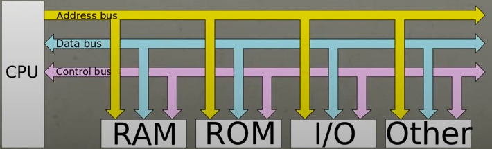
1.2.4.4 Interrupciones
Una interrupción es una señal recibida por el procesador de un ordenador, indicando que debe "interrumpir" el curso de ejecucion actual y pasar a ejecutar codigos especificos para tratar la situacion.
Una interrupcion es una suspension temporal de la ejecucion de un proceso, para pasar a ejecutar una subrutina de servicio de interrupcion, la cual no forma parte del programa, sino que pertenece al sistema operativo o al BIOS. una vez terminada la subrutina, se reanuda la ejecucion del programa.
Las interrupciones surgen de la necesidad que tienen los dispositivos perifericos de enviar informacion al procesador principal de un sistema informatico.